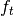
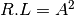
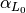

4. Diseño planimétrico¶
La geometría del eje de las carreteras es una curva en tres dimensiones. Con el fin de facilitar su estudio, es habitual estudiar por separado dos componentes: el trazado en planta y el perfil longitudinal. El trazado en planta es la proyección sobre un plano horizontal del eje de la carretera. El trazado en alzado, denominado «perfil longitudinal», es la representación gráfica de una función z = f (s) , donde s es la distancia recorrida a lo largo del eje de la carretera contada a partir del origen del tramo, y z es la cota o altitud de los puntos del eje respecto de un plano horizontal de referencia.
La consideración de la proyección del trazado en planta sobre una superficie horizontal es una simplificación, pues la superficie de la Tierra sobre la que discurre la carretera no es plana. Se utiliza un sistema cartesiano en dos dimensiones para representar la proyección en planta de la carretera. Aunque se podría utilizar cualquier sistema de coordenadas, es habitual utilizar coordenadas UTM (Universal Transverse Mercator), utilizando como eje de abscisas los paralelos y como eje de ordenadas los meridianos.
La percepción que los ocupantes de un vehículo tienen del trazado en planta no se deriva de las coordenadas de los puntos, sino de otras variables relacionadas con ellas y más directamente perceptibles:
- Rumbo o Azimut: es la dirección hacia la que apunta el morro del vehículo y hacia donde avanza. Se utiliza el ángulo que forma con el Norte la tangente a la alineación en el punto considerado, creciente en el sentido de las agujas del reloj. En América y en los países anglosajones el azimut se mide en grados sexagesimales: de 0º a 360º, ángulo recto = 90º. En Europa se utilizan los gonios, o grados centesimales (de 0 gon a 400 gon, ángulo recto = 100 gon).
- Curvatura: es el inverso del radio
del círculo osculador a la trayectoria en el punto considerado. Su acción es percibida a través de la fuerza centrífuga que produce, en combinación con la velocidad del vehículo. En América, es frecuente utilizar el concepto de grado de curvatura (*DC=degree of curvature*), que se define como el ańgulo subtendido en el centro por un arco de 100 pies, medido en grados sexagesimales. (1 pie=0.3048 m)
El trazado en planta de una carretera o calzada se compondrá de la adecuada combinación de los siguientes elementos:
- Alineación recta (o recta): el azimut es constante y la curvatura nula
- Alineación circular (o curva circular): el azimut varía linealmente con la distancia recorrida y la curvatura es constante
- Curva de acuerdo (o curva de transición): tanto la curvatura como el azimut varían con la distancia recorrida
La combinación de una alineación circular y sus curvas de acuerdo suele denominarse abreviadamente alineación curva (o curva).
La definición del trazado en planta se referirá a un eje, que fija un punto en cada sección transversal, para cuya definición en general y salvo justificación en contrario, se adoptará:
- Carreteras de calzadas separadas: + El centro de la mediana, si ésta fuera de ancho constante o con variación de ancho aproximadamente simétrica. + El borde interior del carril más próximo a la mediana para cada una de las calzadas. + El borde interior de la plataforma más próximo a la mediana para cada una de las plataformas. + El borde interior del carril más próximo a la mediana con la sección transversal.
- Carreteras de calzada única y doble sentido de circulación: El centro de la calzada, sin tener en cuenta eventuales carriles adicionales (centro de la marca vial de separación de sentidos).
- Carreteras de calzada única y sentido único de circulación: Cualquiera de los bordes de la calzada (con uno o más carriles).
4.1. RECTAS¶
La alineación recta es un elemento de trazado que está indicado en carreteras convencionales para obtener suficientes oportunidades de adelantamiento y en cualquier tipo de carretera para adaptarse a condicionamientos externos obligados (infraestructuras existentes, condiciones urbanísticas, terrenos llanos, etc.).
4.1.1. LONGITUDES MÍNIMA Y MÁXIMA¶
Se ha comprobado, que en alineaciones rectas de gran longitud, puede haber accidentes debido a la monotonía de la conducción en dichas condiciones. Por ello es conveniente evitar alineaciones rectas a las que corresponda un tiempo de recorrido mayor de 60 075 s, sustituyéndolas por curvas de radio amplio (5000 a 10.000 m). Estas curvas obligan al conductor a modificar suavemente la dirección, manteniendo despierta su atención, y evita el deslumbramiento de los faros del vehículo que circula en sentido contrario.
Por el contrario, si la recta entre dos curvas es muy corta, los conductores las trazarán de forma conjunta. Para que se produzca una acomodación y una adaptación a la conducción, se procurará limitar las longitudes mínimas de las alineaciones rectas. Asimismo para evitar problemas relacionados con el cansancio, los deslumbramientos, los excesos de velocidad, etc., se procurará limitar las longitudes máximas de las alineaciones rectas.
En caso de disponerse el elemento alineación recta, se procurará que las longitudes mínima y máxima, en función de la velocidad de proyecto (Vp), sean las obtenidas de las expresiones siguientes:
{kind=link}
donde:
- = Longitud mínima (m) para trazados en “S” (alineación recta entre alineaciones curvas con radios de curvatura de sentido contrario).
- = Longitud mínima (m) para el resto de casos (alineación recta entre alineaciones curvas con radios de curvatura del mismo sentido).
- = Longitud máxima (m).
= Velocidad de proyecto del tramo (km/h).
Se emplearán alineaciones rectas, en general, en coincidencia con nudos y tramos singulares que así lo justifiquen y, en particular, en terrenos llanos, en valles de configuración recta y por conveniencia de adaptación a otras infraestructuras lineales y además, en carreteras convencionales, en las proximidades de cruces y tramos de detención obligada.
4.2. CURVAS CIRCULARES¶
Fijada una cierta velocidad el radio mínimo a adoptar en las curvas circulares se determinará en función de:
- El peralte máximo y el rozamiento transversal máximo movilizado.
- La visibilidad de parada en toda su longitud.
- La coordinación del trazado en planta y alzado, para evitar pérdidas de trazado, de orientación y dinámica.
Para describir el comportamiento de un vehículo que circula por una curva circular se considera un modelo consistente en establecer su equilibrio transversal como sólido rígido, que recorre dicha curva circular en planta a velocidad constante, prescindiendo del efecto del sistema de suspensión.
Según este modelo, la velocidad de la curva circular, el radio, el coeficiente de rozamiento transversal movilizado y el peralte se relacionan mediante la siguiente expresión:
{kind=link}
Siendo:
= Velocidad de la curva circular (km/h).
= Radio de la circunferencia que define el eje del trazado en planta (m).
-  = Coeficiente de rozamiento transversal movilizado.
= Peralte (%).
Para toda curva circular con el peralte máximo correspondiente se cumplirá que, recorrida la curva circular a la velocidad específica ( ), no se sobrepasarán los valores del coeficiente transversal máximo movilizado ( ) de la Tabla siguiente:
{kind=link}
El radio deducido de la expresión anterior constituye el mínimo admisible en el diseño de la curva circular. La utilización sistemática de curvas circulares con radios mínimos se justificará suficientemente. Se adoptará como velocidad específica ( ) de cada una de las curvas circulares que forman parte de un tramo la correspondiente a la velocidad de proyecto ( ) de dicho tramo.
En la tabla siguiente se incluyen los radios mínimos y los peraltes máximos correspondientes a diferentes velocidades proyecto ( ):

Para radios superiores a los mínimos indicados en la tabla anterior, se deberán cumplir los criterios indicados en la siguiente tabla:
{kind=link}
4.3. CURVAS DE ACUERDO¶
Las curvas de acuerdo (o curvas de transición) tienen por objeto evitar discontinuidades en la curvatura del trazado, por lo que, en su diseño deberán proporcionar las mismas condiciones de comodidad y seguridad que el resto de los elementos del trazado.
Para curvas circulares de radio menor que cinco mil metros (< 5 000 m) en autopistas y autovías y para curvas circulares de radio menor que dos mil quinientos metros (< 2 500 m) en carreteras convencionales, será necesario utilizar curvas de acuerdo, mientras que para curvas circulares de radios mayores o iguales que los indicados no será necesario utilizarlas.
{kind=link}
Se adoptará en todos los casos como forma de la curva de acuerdo una clotoide, cuya ecuación intrínseca es:

Siendo:
- R = Radio de curvatura en un punto cualquiera.
- L = Longitud de la curva entre su punto de inflexión (R = ∞) y el punto de radio R .
- A = Parámetro de la clotoide, característico de la misma.
- Otros valores a considerar son:
- Ro = Radio de la curva circular contigua.
- Lo = Longitud total de la curva de acuerdo.
- ∆ Ro = Retranqueo de la curva circular.
- Xo , Yo = Coordenadas del punto de unión de la clotoide y de la curva circular, referidas a la tangente y normal a la clotoide en su punto de inflexión.
- Xm , Ym = Coordenadas del centro de la curva circular (retranqueada) respecto a los mismos ejes.
- = Ángulo de desviación que forma la alineación recta del trazado con la tangente en un punto de la clotoide.
- En radianes:
- En gonios:

-  = Ángulo de desviación en el punto de tangencia con la curva circular.
 = Ángulo entre las rectas tangentes a dos clotoides consecutivas en sus puntos de inflexión.
= Ángulo entre las rectas tangentes a dos clotoides consecutivas en sus puntos de inflexión.- V = Vértice, punto de intersección de las rectas tangentes a dos clotoides consecutivas en sus puntos de inflexión.
- T = Tangente, distancia entre el vértice y el punto de inflexión de una clotoide.
- B = Bisectriz, distancia entre el vértice y la curva circular.
4.3.1. RELACIÓN ENTRE EL RADIO Y EL PERALTE¶
La adopción de peraltes máximos permite:
- Para un mismo radio, pasar por la curva a la máxima velocidad compatible con movilizar un rozamiento limitado
- Para una misma velocidad, definir el mínimo radio compatible con ese rozamiento
Sin embargo, no se pueden disponer unos peraltes demasiado fuertes en las curvas de radio grande si se recorren a una velocidad baja, pues para mantener el vehículo en la trayectoria, habría que girar el volante hacia el exterior de la curva. La adopción de peraltes elevados tropieza, además, con otros inconvenientes, como son la necesidad de utilizar maquinaria especial para la construcción, o problemas derivados de la existencia de nieve o hielo en el pavimento.